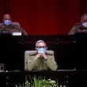

Coronavirus: habrían identificado a la mujer que desató la pandemia en el mundo
La primera persona que dio positivo por el nuevo coronavirus en un mercado de alimentos de Wuhan, donde probablemente comenzó la pandemia, fue una mujer que vendía camarones vivos, según un documento filtrado a los medios.
Según
The Wall Street Journal, la mujer tiene 57 años y su nombre completo es Wei Guixian.Wei vivía en un piso alquilado a menos de 500 metros del mercado y desarrolló fiebre el 11 de diciembre, dijo al medio de noticias chino
The Paper .
Pensando que era la gripe estacional, fue a una clínica pequeña y abarrotada de gente para buscar consejo médico, pero las inyecciones que le dieron no curaron su enfermedad.
Wei, que se cree que se recuperó, recordó sus síntomas iniciales en T
he Paper : 'Me sentía un poco cansada, pero no tan cansada como en años anteriores'.
El Centro Chino para el Control y Prevención de Enfermedades dijo en enero que el coronavirus había sido transmitido a los humanos por animales vivos vendidos como alimento en el Mercado Mayorista de Mariscos de Huanan, donde trabajaba Wei.
La comerciante dijo que continuó vendiendo mariscos en el mercado mientras estaba enferma y que fue a un hospital más grande, el Undécimo Hospital de Wuhan, para obtener una segunda opinión más adelante.
'El médico del hospital Undécimo no pudo descubrir qué me pasaba y me dio pastillas'.
Tomó la medicina pero no se sintió mejor.Regresó a la pequeña clínica para pedir más inyecciones: 'Pero me sentí mucho peor.No tenía suficiente fuerza o energía'.
Finalmente, el 16 de diciembre, se dirigió a uno de los hospitales más grandes de la ciudad, el Hospital de la Unión de Wuhan, para un chequeo adecuado.
Un hombre vendiendo la cabeza de un buey en el mercado de Wuhan (AFP).
Allí, un médico describió su enfermedad como 'despiadada' y le dijo que varias otras personas de Huanan ya habían tenido síntomas similares.'En ese momento, había muchas personas en el hospital', agregó la mujer.
Wei fue una de las primeras 27 pacientes diagnosticadas con COVID-19, la enfermedad causada por el coronavirus, según un comunicado de la Comisión de Salud Municipal de Wuhan el 31 de diciembre.Entre ellos, 24 tenían vínculos directos con el mercado de Huanan.
La autoridad dijo en ese momento que ninguna evidencia había demostrado que el virus pudiera transmitirse de humano a humano.Sin embargo, la identidad de la primera víctima de COVID-19, también conocida como 'paciente cero', para muchos sigue siendo un misterio en China.
Aunque Wei es la primera en dar positivo en el mercado, China supuso que el primer paciente conocido con coronavirus es un jubilado de unos 70 años.El hombre no identificado desarrolló síntomas el 1 de diciembre y no había estado en el mercado de mariscos de antemano, dijo un médico a la BBC.
Sin embargo, registros clasificados del gobierno mostraron que el primer caso de una persona que sufría COVID-19 se remonta al 17 de noviembre, informó
South China Morning Post.
La fecha es más de siete semanas antes de que las autoridades chinas anunciaran que habían identificado un nuevo virus y más de dos meses antes de que varias ciudades de la región se cerraran para contener la propagación del virus.
Los datos no publicados mostraron que las autoridades chinas identificaron al menos a 266 personas infectadas antes del 31 de diciembre, un momento en que las autoridades de Wuhan estaban ocupadas castigando a un grupo de médicos por hacer sonar la alarma de una enfermedad 'similar al SARS'.
El doctor Zhong Nanshan, líder de un equipo de expertos designados por China para hacer frente a la crisis de salud, negó la semana pasada que el error se originó en Wuhan y criticó tal afirmación como 'irresponsable'.
'La epidemia de la nueva neumonía por coronavirus tuvo lugar en China, en Wuhan ... pero eso no significa que su origen esté en Wuhan', dijo el Dr. Zhong en una conferencia de prensa.
GML
Posted On: 2020-03-30T12:54:00
Posted By: Clarín.com

Content Date: 2020-03-30
Download Date: 2021-04-21
Document ID: L0C04AP1C